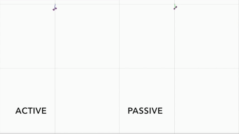

Active Learning
 How can a robot actively learn about the environment and itself in an algorithmic manner that is safe and reliable? This portion of my research involves developing active learning strategies that enable robotic systems to make informed control decisions.
How can a robot actively learn about the environment and itself in an algorithmic manner that is safe and reliable? This portion of my research involves developing active learning strategies that enable robotic systems to make informed control decisions.
Data-driven Control
 Using active learning methods, this part of my research involves allowing control decisions to be based on sensor data rather then a physics-based model representation. This work allows robotic agents to rapidly adapt to changes in the underlying dynamics of the robot and the environment.
Real-time Control
Much of the mentioned research relies on nonlinear control methods that are able to run in real-time. This research area focuses on augmenting control algorithms to run real-time in Python and C++ on small computational scale controllers.
Related Publications
I. Abraham, G. de la Torre, and T. D. Murphey, "Model-Based Control using Koopman Operators," in Proceedings of Robotics: Science and Systems, 2017. doi: 10.15607/RSS.2017.XIII.052. A. Mavrommati, E. Tzorakoleftherakis, I. Abraham and T. D. Murphey, "Real-Time Area Coverage and Target Localization Using Receding-Horizon Ergodic Exploration," in IEEE Transactions on Robotics, vol. PP, no. 99, pp. 1-19. doi: 10.1109/TRO.2017.2766265
Email: i-abr@u.northwestern.edu, ianabraham21@gmail.com
Google Scholar : scholar